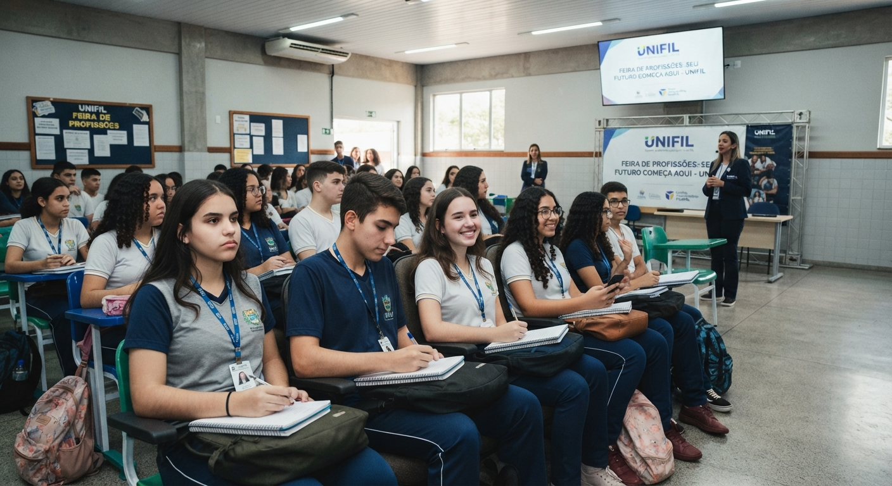
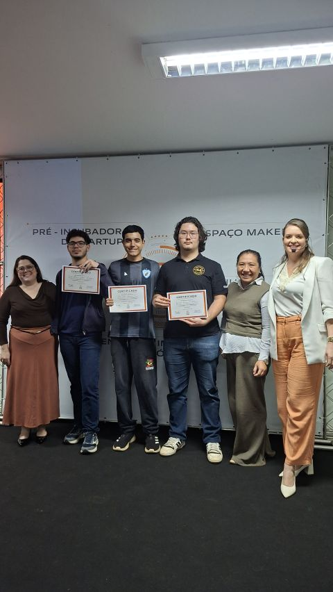
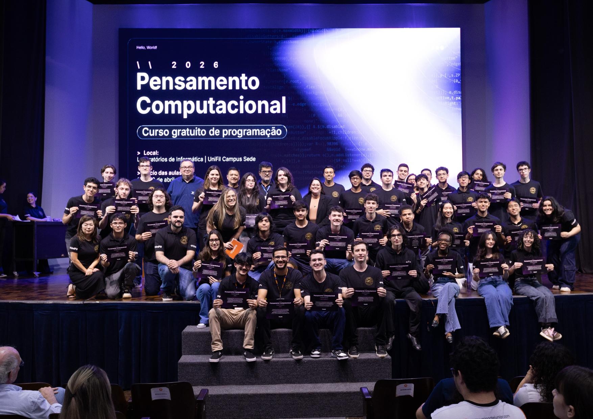

Eventos que participei na escola

Eu participei da semana da tecnologia na minha escola, um evento onde um grupo de discentes e alunos organizaram apresentações que aconteriam ao longo de uma semana. Dentre as apresentação algumas instituições de ensino superio como Positivo e UniFil falaram um pouco sobre os seus cursos para os alunos do ensino médio.

Tivemos a participação de alguns profissionais da tcs que realizaram uma palestra contando um pouco sobre a empresa, oportunidades na área da tecnologia realizado no auditorio da UEL. Nesse dia a universidade disponibilizou o seu autorio para sediarmos esse evento.
Eventos que participei na faculdade

Eu tive a oportunidade de participar da pré-incubadora da UniFil junto com alguns colegas com uma ideia desenvolvida no ideathon GreenTech 2026. Ao final dessa etapa eu e minha equipe participamos da formatura realizada junto com uma pequena apresentação da nossa startup.

No dia 09/11/2026 pude participar da formatura do projeto Londrinensetech da UniFil em parceria com o Colégio Londrinense, atuando como monitor da turma 1(6° ano). Nesse dia todos os alunos, monitores e instrutores de cada turma conseguiram receber o seu certificado de conclusão de mais um ciclo desse projeto.

No dia 10/11/2026 eu participei da formatura do projeto Pensamento Computacional da UniFil, em parceria com diversas escolas do ensino médio, atuando como monitor da turma C. Nesse dia todos os alunos, monitores e instrutores de cada turma conseguiram receber o seu certificado de conclusão de mais um ciclo desse projeto.